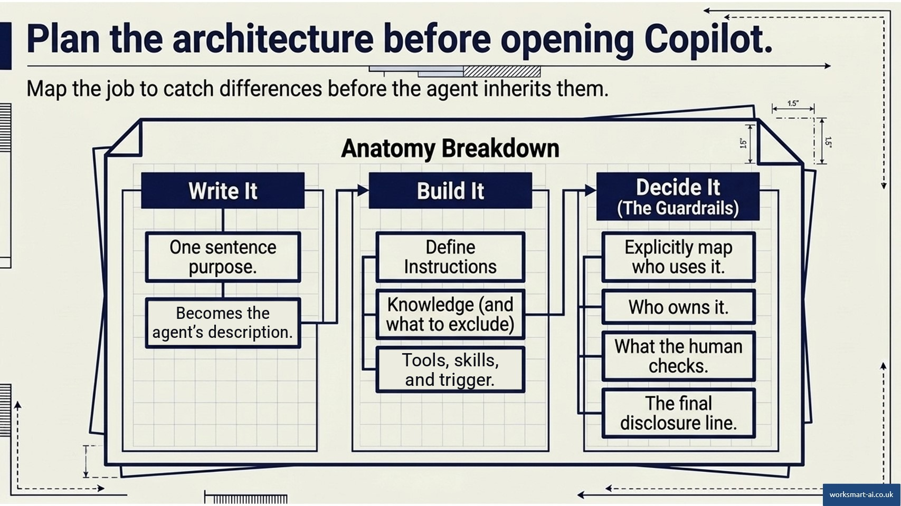
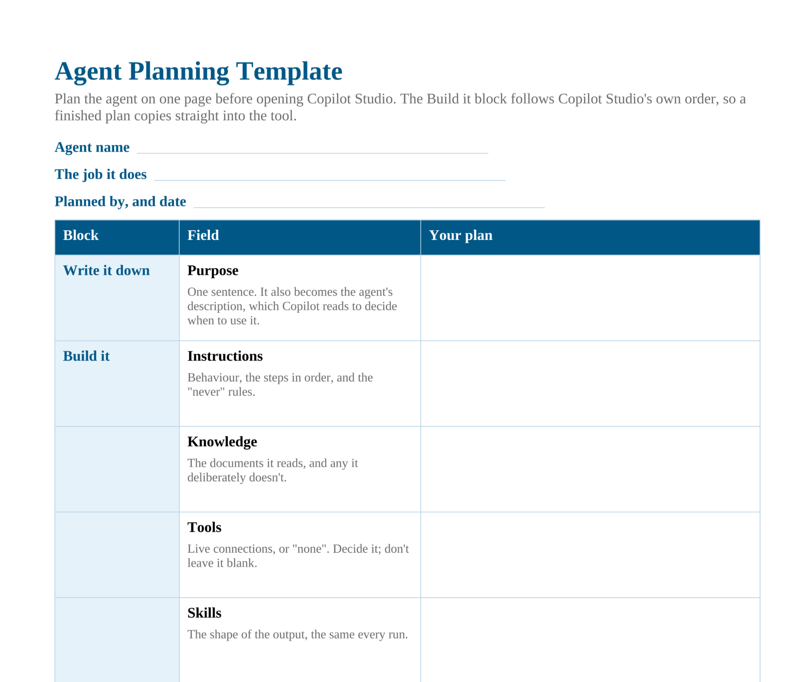

Module 3: Plan the agent
Module 3: Plan the agent
Estimated time: 9-10 minutes
Goal: Plan an agent using the planning template.
Why plan first?
Planning before building does three things.
- It shows where versions of the job differ. Two people who both track meeting actions each week may not agree on what counts as overdue, or on what to do with an action that has no due date. This can be resolved before building, which saves time.
- It keeps the build short. Each field on the template maps to a part of the agent, in the order Copilot Studio asks for them, so the build becomes a matter of copying the plan across.
- It costs nothing. Building and testing in Copilot Studio can use Copilot Credits from the first test, as Module 4 explains. A plan on paper uses none.
Also, done well, it can be a great team building activity!
The planning template
First, make sure you've downloaded the file template:
The template has ten fields in three blocks:
The first says what the agent is for.
The second is the build, in Copilot Studio’s own order.
The third holds the decisions, and they’re where most of the Strategy Office guardrails are.
Block | Field | What goes in it |
|---|---|---|
Write it down | Purpose | One sentence. It also becomes the agent’s description, which Copilot reads to decide when to use the agent |
Build it | Instructions | Behaviour, the steps in order, and the “never” rules |
Build it | Knowledge | The documents it reads, and any it deliberately doesn’t |
Build it | Tools | Live connections, or “none”, decided rather than left blank |
Build it | Skills | The shape of the output, the same every run |
Build it | Trigger | What starts it: a person, a schedule, or a file arriving |
Decide it | What a human checks | Which parts of the output a person reviews, and who makes the decision |
Decide it | Who can use it | The people it’s shared with, and their access |
Decide it | Owner and review date | The named person responsible, and when the agent is next reviewed |
Decide it | Disclosure line | How anything the agent produces is marked as AI-assisted, and how it was checked |

The planning template’s three blocks: write it down, build it, decide it.
The template, filled in: The NSS agent
Here’s the plan for the agent that writes the NSS report, the Programme Feedback Report agent from Module 2. Module 5 adds a second agent to check its work.
Field | Programme Feedback Report agent |
|---|---|
Purpose | Turn one programme’s NSS response file into the house report: themes, counts, quotes, and flagged comments, ready for the programme lead to check and sign |
Instructions | Read every comment. Theme against four categories and no others. Keep comments that name staff and comments about access needs out of the themes, in their own sections. Never name staff. Never report a theme from fewer than three comments. Leave Recommendations empty |
Knowledge | This year’s response workbook, the source of every figure. The house template. Last year’s signed report, for the year-on-year comparison only |
Tools | A SharePoint connection to the NSS Responses folder, so a new file can be picked up where it lands |
Skills | The house report: ten sections in order, the themes table, and the flagged sections |
Trigger | A person, on demand, while it’s tested. Later, the reporting workflow, when a new response file lands |
What a human checks | Every figure, quote, and flagged section. The programme lead writes Recommendations and decides whether the report is used |
Who can use it | The programme quality team. Not students, and not staff named in the responses |
Owner and review date | The Director of Education and Student Experience. Reviewed each September, before fieldwork opens |
Disclosure line | “Drafted by an AI agent from the NSS 2026 response file. Reviewed by the programme lead, who is responsible for this report.” |

The Agent Planning Template, ready to fill in for your own agent.
Knowledge includes last year’s report, but its description limits it to one use. Last year’s report carried a fifth theme, student voice, and an agent that reads it freely will be pulled towards repeating it. So it’s described as “use only for the year-on-year comparison”, and the instructions say never to invent a fifth category.
Instructions carry the “never” rules, because each one holds whatever the agent produces. They’re also where the traps in the workbook get their fix: staff names, access needs, and a theme too small to report. Module 4 tests each one.
Activity: Put the planning steps in order
Arrange the planning steps in the order the template works through them.
Put these steps in the correct order.
Drag items to reorder them correctly.
- ⠿Write the purpose in one sentence
- ⠿Write the instructions, including the “never” rules
- ⠿Choose the knowledge, including what to leave out
- ⠿Decide on tools, or record “none”
- ⠿Define the output shape as a skill
- ⠿Set the trigger
- ⠿Decide what a human checks, who can use it, who owns it, and the disclosure line
Four Strategy Office jobs to build
Choose one of these four jobs to plan and build through Modules 3 to 6, or use the weekly job from Module 1 – or choose one of your own!
Three were breakout rooms at the September workshop. All four share the same things: read named documents, produce a structured output that can be traced to its source, and never make the judgement.
Choose one and use your agent template to plan it!
Job | Purpose | The trap to plan for |
|---|---|---|
Meeting actions tracker | This week’s actions list: open actions, overdue actions, and what’s closed since last week, each with its owner | An action with no due date isn’t the same as an overdue one. The instructions need a rule for empty fields |
Scope and milestone extractor | Scope, out-of-scope list, milestones, and dependencies for an initiation pack, each item citing its business-case paragraph | A milestone that’s plausible for this kind of project but isn’t in the business case. Anything the case doesn’t cover is marked “not in the business case” |
Admission cycle monitor | This week’s position against target and against the same point last cycle, by faculty, programme, and domicile | Cycle weeks don’t line up with calendar weeks. The agent states which week it compared against, and reports movement, never the reason for it |
Planning submission checker | The same check on every faculty submission: each requirement present, missing, or present but unanswered, and each claim matched to a strategic objective | A heading with boilerplate under it looks present. The agent never rates or ranks faculties |
Who is it for?
The Strategy Office’s Agent Creation & Management Framework sorts agents by who will use them.
Category | Who uses the agent | Route |
|---|---|---|
1 | You, on your own profile | Build it yourself |
2 | A team or project team | Use case suggestion form |
3 | The whole Strategy Office, such as portfolio management | Use case suggestion form |
4 | Staff across the University | Use case suggestion form. Ideas are passed to the relevant team. |
The use case suggestion form is on the Strategy Office SharePoint site. The Strategy Office AI Steering Group reviews each suggestion and confirms its decision. An approved use case is written up with its requirements, agreed with the people who’ll use it, and its roles: sponsor, owner, developer, tester, and approver.
Several of those stakeholders test the agent, the business owner signs it off before it’s announced, and it’s evaluated for productivity and quality once it’s live. Every approved agent is recorded in the office’s central index of agents, with the date its use case was signed off, who has access, and at what level. Questions about the process go to StrategyDelivery@soton.ac.uk.
The “Who can use it” field on the template settles the category. Fill it in before building, not after.
A project manager plans a meeting actions agent that everyone on the project team will run each Monday. What comes before it’s shared with the team?